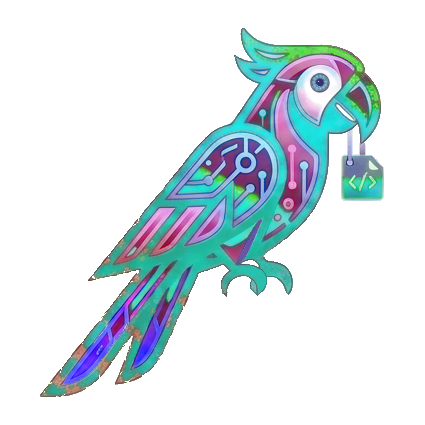
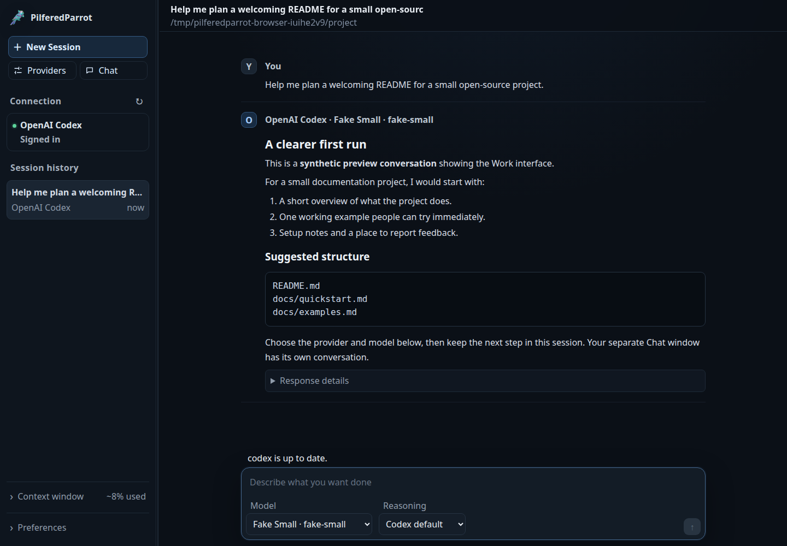

Choose your destination
Open Providers to see connection state, choose a model, and start a fixed-provider window. Add compatible APIs with a preset or your own endpoint.

PilferedParrot InterfacePilferedParrot Interface is a local browser interface for coding engines and compatible model APIs. Pick the provider you want, keep technical work in Work, and open a separate read-only Chat when you need it.
Apache 2.0 · Linux · Python 3.12+ · no third-party Python packages
You choose a provider and its model. PilferedParrot keeps work sessions and casual questions in separate windows, with your conversation history saved locally.
Open Providers to see connection state, choose a model, and start a fixed-provider window. Add compatible APIs with a preset or your own endpoint.
Work shows live provider commentary, commands, tool completion events, context use, and persistent provider session history in one local UI.
Open Chat in its own floating window for a separate read-only provider session. Ask about an idea without adding another turn to your Work conversation.
Codex, Local Qwen, Antigravity, and LM Studio passed contained live checks on Linux Mint/X11. The automated suite passed all 440 tests, including browser coverage. Read the validation.
OpenRouter, Mistral/Devstral, and other remote APIs still need your own credential and plan access. Their offline protocol tests passed; no live model certification was claimed without an account.

Use Python 3.12 or newer on Linux; Chrome or Chromium gives you a dedicated app window. Then open Providers to choose an installed, authenticated CLI or add a compatible endpoint.
git clone --branch v0.5.1 https://github.com/PilferedParrot/PilferedParrot-Interface.git PilferedParrot-Interface cd PilferedParrot-Interface cp config.example.json config.json ./bin/pilferedparrot
The interface runs on this computer at http://127.0.0.1:8765. Prompts and tool results go to the provider you choose. Start a local model server separately if using one; provider access and usage costs are separate from this open-source app.
Read the release notes, inspect the source, and tell us what made your first session easier or harder.